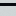
黑色地铁车厢外壳Create: Train Deco
附属模组
Create: Train Deco
这是什么
来自 mcmod 1.20.1 附属模组清单，共 66 个物品。
命名空间：
traindeco 1.20.1 版本：本页物品与配方直接取自该版本的 jar。全部物品66
黑色地铁车厢外壳traindeco:black_line_train_wall
深蓝色地铁车厢外壳traindeco:blue_line_train_wall
棕色地铁车厢外壳traindeco:brown_line_train_wall
青色地铁车站装饰方块traindeco:cyan_line_station_wall
青色地铁车厢外壳traindeco:cyan_line_train_wall
灰色地铁车厢外壳traindeco:gray_line_train_wall
深绿色地铁车站装饰方块traindeco:green_line_station_wall
深绿色地铁车厢外壳traindeco:green_line_train_wall
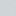
浅蓝色地铁车站装饰方块traindeco:light_blue_line_station_wall
浅蓝色地铁车厢外壳traindeco:light_blue_line_train_wall
浅灰色地铁车站装饰方块traindeco:light_gray_line_station_wall
浅灰色地铁车厢外壳traindeco:light_gray_line_train_wall
浅绿色地铁车厢外壳traindeco:lime_line_train_wall
品红色地铁车厢外壳traindeco:magenta_line_train_wall
车门静音装置traindeco:mute
橙色地铁车厢外壳traindeco:orange_line_train_wall
粉色地铁车厢外壳traindeco:pink_line_train_wall
紫色地铁车厢外壳traindeco:purple_line_train_wall
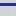
(石英内墙) 深蓝色地铁车厢外壳traindeco:quartz_blue_line_train_wall
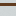
(石英内墙) 棕色地铁车厢外壳traindeco:quartz_brown_line_train_wall
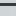
(石英内墙) 灰色地铁车厢外壳traindeco:quartz_gray_line_train_wall
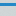
(石英内墙) 浅蓝色地铁车厢外壳traindeco:quartz_light_blue_line_train_wall
(石英内墙) 浅灰色地铁车厢外壳traindeco:quartz_light_gray_line_train_wall
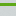
(石英内墙) 浅绿色地铁车厢外壳traindeco:quartz_lime_line_train_wall
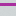
(石英内墙) 品红色地铁车厢外壳traindeco:quartz_magenta_line_train_wall
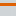
(石英内墙) 橙色地铁车厢外壳traindeco:quartz_orange_line_train_wall
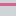
(石英内墙) 粉色地铁车厢外壳traindeco:quartz_pink_line_train_wall
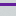
(石英内墙) 紫色地铁车厢外壳traindeco:quartz_purple_line_train_wall
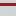
(石英内墙) 红色地铁车厢外壳traindeco:quartz_red_line_train_wall
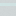
(石英内墙) 银白色地铁车厢外壳traindeco:quartz_white_line_train_wall
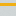
(石英内墙) 黄色地铁车厢外壳traindeco:quartz_yellow_line_train_wall
红色地铁车厢外壳traindeco:red_line_train_wall
银白色地铁车厢外壳traindeco:white_line_train_wall
黄色地铁车厢外壳traindeco:yellow_line_train_wall